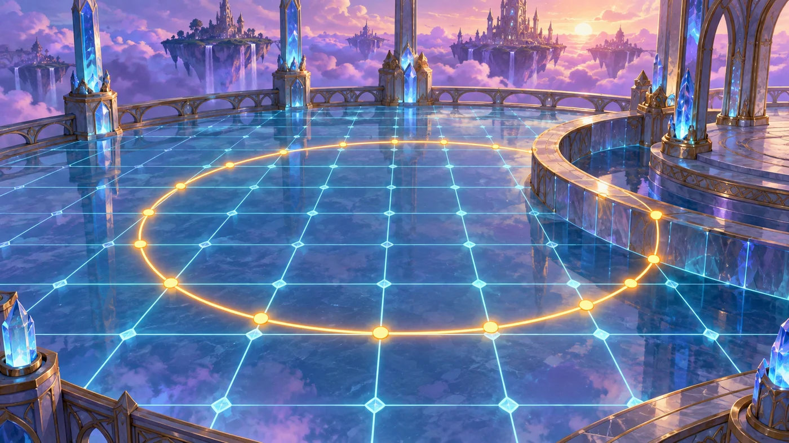
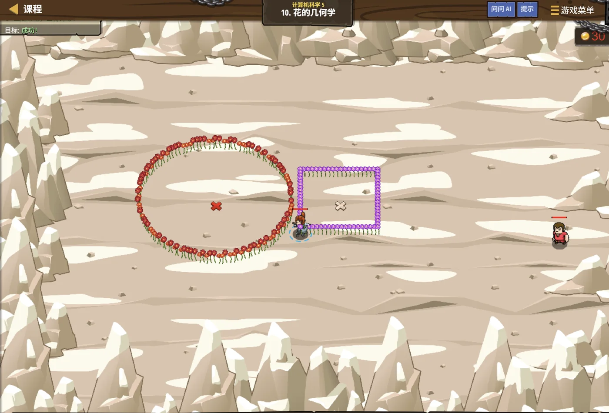

故事：你戴上了一枚"花之戒指"，它能把地面变成画布——
你在哪儿，花就开到哪儿。
想画出规整的图案，就得算准位置。塞尼克说，
圆心、半径、角度，一样都不能马虎。
扣哒考级 · GESP C++ 七级 · 第 1 单元 | 雷鸣高塔 THUNDERSPIRE
塔顶星图 数学库的应用
The math Library

塞尼克
沙海向导 · 你的向导
雷鸣高塔的塔顶铺着一张巨大的星图。你趴上去细看，发现星星之间都连着细线，
线上标着长度。
这些长度是怎么算出来的？你问。
塞尼克递来一把铜尺：用勾股定理。但你不用自己开平方—— C++ 的标准库里有现成的数学函数，专门干这些事。
这些长度是怎么算出来的？你问。
塞尼克递来一把铜尺：用勾股定理。但你不用自己开平方—— C++ 的标准库里有现成的数学函数，专门干这些事。
塞尼克 · 沙海向导
欢迎来到七级。从这里开始，题目会越来越像数学题。好消息是：C++ 的标准库自带一整套数学函数，开方、取整、圆周率、绝对值……全都现成的。
这一单元我们就把它过一遍，顺便学会"坐标距离"这个高频考点。
assets/illustrations/py-L7-01-01_star_chart.webp
【配图位】雷塔顶层的巨大星图石台，星点之间连着发光的细线并标注着长度数值；台面一角摆着铜制圆规与直尺，紫色雷光从塔檐垂落，照亮半张图。
0 单元导语与目标
Unit Overview
0.1 学习目标
1学完这个单元，你将能……
- 正确包含并使用 <cmath> 里的数学函数
- 用 sqrt、ceil、floor 解决计算问题
- 用 M_PI 计算圆周长与圆面积
- 掌握三角函数、对数函数、指数函数
- 用勾股定理求两点距离
- 区分"先算再取整"和"取整再算"
- 判断哪些运算必须用浮点数
0.2 考纲对照
2对标 GESP 考纲（C++ 七级）
- 掌握 <cmath> 里常用数学函数的用法
- 掌握 sqrt、ceil、floor、fabs、pow、M_PI 的用法
- 掌握三角函数 sin/cos/tan、对数函数 log/log10/log2、指数函数 exp
- 能用数学库解决距离、面积、取整等实际问题
- 考核目标：能读懂并写出用到数学库的程序
1 为什么需要数学库
Why a Math Library
1.1 内置运算符不够用
自己写 vs 用现成的
C++
// 想开平方，自己写很麻烦
// 用 <cmath> 里的 sqrt，一行搞定
#include <cmath>
#include <iostream>
using namespace std;
cout << sqrt(16) << endl; // 4
cout << sqrt(2) << endl; // 1.41421
要点
#include <cmath> 之后，直接写 sqrt(16) 就能算1.2 怎么把数学函数请进来
用法两步走：
第一步：开头写
第二步：直接写函数名，例如
别忘了还要
第一步：开头写
#include <cmath>，把数学函数请进来；第二步：直接写函数名，例如
sqrt(9)、ceil(1.2)。别忘了还要
#include <iostream> 和 using namespace std;。
2 常用函数一览
Common Functions
2.1 一张表看懂常用函数
| 函数 | 作用 | 例子 | 结果 |
|---|---|---|---|
sqrt(x) | 开平方根 | sqrt(25) | 5 |
ceil(x) | 向上取整（进一） | ceil(3.1) | 4 |
floor(x) | 向下取整（舍去） | floor(3.9) | 3 |
fabs(x) | 绝对值（返回小数） | fabs(-5) | 5 |
M_PI | 圆周率 π（常量） | 2 * M_PI * r | 圆周长 |
pow(a, b) | 幂（返回小数） | pow(2, 3) | 8 |
abs(x) | 整数的绝对值 | abs(-5) | 5 |
(int)x | 截断取整（向 0 靠） | (int)3.9 | 3 |
sin(x) | 正弦（x 为弧度） | sin(pi/2) | 1 |
cos(x) | 余弦（x 为弧度） | cos(0) | 1 |
log | 自然对数（以 e 为底） | log(e) | 1 |
log10(x) | 常用对数（以 10 为底） | log10(1000) | 3 |
log2(x) | 以 2 为底的对数 | log2(8) | 3 |
exp(x) | 指数（e 的 x 次方） | exp(0) | 1 |
2.2 两个容易踩的坑
两个容易踩的坑：
①
②
要整数时记得用
①
pow 返回的是小数！
要整数结果请把结果转成 int，或干脆连乘。②
sqrt 的结果一定是小数，
即使 sqrt(16) 得到 4，它的类型也还是小数（double）。要整数时记得用
(int) 转换。
图 2（SVG）：向上取整与向下取整
2.3 三角函数：参数是"弧度"，不是"度"
七级考纲把数学库分成了三小类：三角、对数、指数。
它们和二级学过的 sqrt / fabs 一样，都在 <cmath> 里，难点不在"会不会写"，而在"参数是什么意思、返回什么类型"。真题里最爱考的就是这两点。
assets/illustrations/py-L7-01-04_trig_log_exp.webp
【配图位】雷鸣高塔的"函数符文墙"上并排刻着三条曲线：一条上下起伏的波浪（正弦）、一条先陡后缓慢慢爬升的曲线（对数）、一条越走越陡直冲上去的曲线（指数）；三条线的起点都标着一颗小星
弧度 vs 度，一句话记牢：
数学库里的三角函数只认弧度。想用"度"，先乘 π 再除以 180（C++ 写
数学库里的三角函数只认弧度。想用"度"，先乘 π 再除以 180（C++ 写
30 * M_PI / 180）。图解：弧度与度的换算——三角函数的参数默认用弧度
三角、对数、指数的基本用法
C++
#include <cmath>
#include <iostream>
using namespace std;
// ① 三角函数：参数是"弧度"，不是"度"
cout << sin(M_PI / 2) << endl; // 1 π/2 弧度 = 90 度
cout << cos(0) << endl; // 1
cout << sin(30 * M_PI / 180) << endl; // 0.5
// ② 对数函数：三种底各有一个
cout << log(M_E) << endl; // 1 以 e 为底（自然对数）
cout << log10(1000) << endl; // 3 以 10 为底
cout << log2(8) << endl; // 3 以 2 为底
// ③ 指数函数：e 的 x 次方
cout << exp(0) << endl; // 1
cout << exp(1) << endl; // 2.71828结论 三角的参数是弧度；log / log10 / log2 分别以 e / 10 / 2 为底；三个函数的返回值都是
double2.4 它们在实际题目里怎么用
对数用来估"要试几次"
C++
// 对数常用来"估数量级"：100 万个数，二分几次能查完？
int n = 1000000;
cout << ceil(log2((double)n)) << endl; // 20 只要 20 次
// 反过来，"每轮翻一倍"也能直接用位运算表示
int days = 10;
cout << (1 << days) << endl; // 1024要点 log2 就是"翻倍几次"的逆运算；指数函数 exp 与
** 的区别只有底不同2.5 三个函数一起考的点
考场三步：
① 看参数单位——三角函数的参数是弧度；
② 看底数——
③ 看返回类型——三个函数都返回小数（C++ 里是
① 看参数单位——三角函数的参数是弧度；
② 看底数——
log 是 e、log10 是 10、log2 是 2；③ 看返回类型——三个函数都返回小数（C++ 里是
double）。
3 两点之间的距离
Distance Between Two Points
3.1 距离公式怎么来的
这是七级最常考的计算之一：给出两个坐标，求它们之间的直线距离。
图 3（SVG）：勾股定理 → 两点距离公式
距离计算的标准写法
C++
#include <cmath>
#include <iostream>
using namespace std;
double dist(double x1, double y1, double x2, double y2) {
double dx = x2 - x1;
double dy = y2 - y1;
return sqrt(dx * dx + dy * dy);
}
cout << dist(0, 0, 3, 4) << endl; // 5
cout << dist(1, 1, 4, 5) << endl; // 5
要点 先算两个方向的差，平方相加，最后开方
3.2 只比远近时不用开方
只比较远近时，可以不开方！
因为平方运算是单调的——距离越远，平方和一定越大。
所以"谁离我最近"这类问题，直接比
这是个很实用的优化，考试里也常考。
所以"谁离我最近"这类问题，直接比
dx*dx + dy*dy 就行，
既省一次开方，也避免小数误差。这是个很实用的优化，考试里也常考。
assets/illustrations/py-L7-01-02_pythagoras_scene.webp
【配图位】高塔顶层的观星台上，两个发光的光点悬在不同高度，一条竖直光带量出高度差、一条水平光带量出水平距离，斜着连起两点的那条光带最长、被标上"斜边"；一名学徒拿尺子对着两条直角边记录读数。
4 取整与取余的配合
Rounding & Modulo
4.1 四种"取整"方式
四种"取整"方式，结果完全不同
C++
#include <cmath>
#include <iostream>
using namespace std;
double x = 7.6;
cout << floor(x) << endl; // 7 向下取整
cout << ceil(x) << endl; // 8 向上取整
cout << (int)x << endl; // 7 截断
double y = -7.6;
cout << floor(y) << endl; // -8 注意负数！
cout << (int)y << endl; // -7 截断（向 0 靠）
重点 对负数，
int() 是向 0 截断，floor() 是向下
经典应用题：能装几箱、需要几辆车
C++
int items = 47; // 一共 47 件货
int perBox = 10; // 每箱装 10 件
int full = items / perBox; // 能装满几箱 → 4
int need = (items + perBox - 1) / perBox; // 至少需要几个箱子 → 5
cout << full << " " << need << endl; // 4 5
区别 "能装满几个"用
//；"至少需要几个"用 ceil4.2 取整与取余一起吃
什么时候用哪个：
"最多能装满几个" →
"至少需要几个" →
"四舍五入保留小数" →
读题时先分清问的是"装得下"还是"够不够用"。
"最多能装满几个" →
//（向下取整）"至少需要几个" →
ceil()（向上取整）"四舍五入保留小数" →
round(x, n)读题时先分清问的是"装得下"还是"够不够用"。

assets/illustrations/py-L7-01-03_grid_round.webp
【配图位】塔壁上一张按格子排布的星图：每一格都编着"行-列"号，一道光点落进其中一格，旁边用小字写着"行 = 向下取整(y / 格宽)"、"列 = 向下取整(x / 格宽)"；一名学徒正对着格线把光点的位置换算成格号。
5 代码实战
Level Practice
关卡
花的几何学
进入关卡 →思路：用坐标控制移动，用数学函数算出"下一个该去的地方"。 几何图案的本质，就是"用公式算出每一步的坐标"。

assets/stages/py-L7-01-stage1_flower_geometry.webp
【关卡截图位】请把《花的几何学》的游戏画面截图放到此处（放入 assets/stages/ 目录，文件名为 py-L7-01-stage1_flower_geometry.webp）。
重点示例：设置颜色并在坐标处画花
C++
hero.toggleFlowers(true); // 打开画花功能
hero.setFlowerColor("purple"); // 选一种颜色
hero.moveXY(30, 40); // 走到哪儿，花就开到哪儿
hero.moveXY(40, 50);
要点
moveXY(x, y) 到哪里，花就开到哪里
和数学库的关联：
想画圆、正多边形、螺旋线，就要靠三角函数和坐标公式算出每个点：
而这些函数都来自 math 库——这就是它的用武之地。
去扣哒世界闯这一关 →
x = 圆心x + 半径 × cos(角度)，
y = 圆心y + 半径 × sin(角度)。而这些函数都来自 math 库——这就是它的用武之地。
6 常见陷阱
Common Pitfalls

扣哒鸭 · 调试官
数学库的坑，一半是"整数还是小数"，一半是"负数取整"。四条，条条都考。
1
忘了
#include <cmath>。
扣哒鸭：会报
用之前一定要在文件开头写 #include <cmath>。
'sqrt' was not declared in this scope。用之前一定要在文件开头写 #include <cmath>。
正确写法：文件开头写
#include <cmath>2
以为
sqrt(16) 返回整数 4。
扣哒鸭：它返回的是 4.0（浮点数）。
题目要整数输出时，记得
题目要整数输出时，记得
(int)sqrt(16)，
或者干脆连乘自己算。正确做法：需要整数就
(int) 转换3
负数取整想当然。以为
int(-7.6) 和
floor(-7.6) 一样。
扣哒鸭：
对正数两者相同，对负数就差了 1。
int(-7.6) 是 -7（向 0 截断）；
floor(-7.6) 是 -8（向更小的方向）。对正数两者相同，对负数就差了 1。
正确认识：(int) 向 0；floor() 向下；ceil() 向上
4
用了
pow 却期望整数结果。
扣哒鸭：
算整数幂请连乘，或把
pow(2, 10) 得到 1024.0，
位数一大还会丢精度。算整数幂请连乘，或把
pow 的结果转成 int。正确写法：整数幂用
(int)pow(x, n) 或连乘7 题目练习
Practice
前 2 题改编自 2026 年 9 月 · C++ 七级 第 2 题与判断题 第 1 题，其余为原创练习题。
改编自 2026 年 9 月 · C++ 七级 · 第 2 题单选题
雷塔的观星台上已经
#include <cmath>。下列关于数学库函数的说法，正确的是（ ）。A.pow(2, 3) 的返回值类型为 int
B.sin(30) 的参数 30 表示 30 度
C.sqrt(4) 的返回值类型为 int
D.log(1) 的返回值为 0.0，且类型为 double
B.sin(30) 的参数 30 表示 30 度
C.sqrt(4) 的返回值类型为 int
D.log(1) 的返回值为 0.0，且类型为 double
查看答案与详解
答案：D。
数学库这三个函数返回的都是浮点数，只不过值恰好是整数时会显示成
A、C 错：
B 错：三角函数的参数是弧度，
一句话记：开方、对数、幂——返回类型全是 double；三角函数的参数是弧度。
对应小节2.5 三个函数一起考的点。
log(1)（以 e 为底的自然对数）结果是 0.0，类型是 double。数学库这三个函数返回的都是浮点数，只不过值恰好是整数时会显示成
8 而不是 8.0，但类型仍然是 double。A、C 错：
pow(2, 3) 得到 8、sqrt(4) 得到 2 —— 值是整数，类型是 double，这是最典型的陷阱；B 错：三角函数的参数是弧度，
sin(30) 里的 30 是 30 弧度（≈1718.9 度），想算 30 度要写 sin(30 * M_PI / 180)。一句话记：开方、对数、幂——返回类型全是 double；三角函数的参数是弧度。
对应小节2.5 三个函数一起考的点。
改编自 2026 年 9 月 · C++ 七级 · 判断题 第 1 题判断题
使用
cmath 或 math.h 中的函数时，表达式 exp(0) 的结果值为 1.0，且类型为 double。（ ）（ ）
查看答案与详解
答案：正确（√）。
而这个 1 是浮点型的 1.0（
要看出来这一点：数学库函数统一返回
常考的同类判断：
对应小节2.3 三角函数：参数是"弧度"，不是"度"。
exp(x) 求的是 e 的 x 次方，所以 exp(0) = e⁰ = 1；而这个 1 是浮点型的 1.0（
double），不是整数 1。要看出来这一点：数学库函数统一返回
double，所以 exp(0) == 1 成立、但 sizeof(exp(0)) 得到的是 8 个字节。常考的同类判断：
sqrt(4)、pow(2, 3)、fabs(-5) 的结果也都是 double。对应小节2.3 三角函数：参数是"弧度"，不是"度"。
原创练习题单选题
下列 C++ 代码执行后，输出的结果是（ ）。
1 #include <cmath> 2 cout << sqrt(81) << endl;
A.9 B.9.0 C.81 D.40.5
查看答案与详解
答案：B。
想得到整数要写
对应小节2 常用函数一览。
sqrt() 返回的永远是
浮点数，所以是 9.0 而不是 9。想得到整数要写
int(sqrt(81))。对应小节2 常用函数一览。
原创练习题单选题
表达式
ceil(4.2) 的值是（ ）。A.4 B.5 C.4.2 D.0.2
查看答案与详解
答案：B。
对比：
对应小节2 常用函数一览。
ceil 是向上取整，
4.2 往上取最近的整数就是 5。对比：
floor(4.2) 才是 4。对应小节2 常用函数一览。
原创练习题判断题
在使用
sqrt() 之前，必须先用 #include <cmath> 把它请进来。（ ）查看答案与详解
答案：正确（√）。math 是一个模块，
必须先导入才能使用里面的函数。
忘记导入会报
对应小节1 为什么需要数学库。
忘记导入会报
NameError——这是最常见的低级错误。对应小节1 为什么需要数学库。
原创练习题单选题
已知两点 (1, 2) 与 (4, 6)，它们之间的距离是（ ）。
A.5 B.7 C.25 D.3
查看答案与详解
答案：A。横向差 = 4-1 = 3，纵向差 = 6-2 = 4，
距离 =
这是最经典的 3-4-5 直角三角形。
对应小节3 两点之间的距离。
距离 =
sqrt(3² + 4²) = sqrt(9 + 16) = sqrt(25) = 5。这是最经典的 3-4-5 直角三角形。
对应小节3 两点之间的距离。
原创练习题单选题
有 43 个苹果，每箱装 6 个，至少需要多少个箱子？（ ）
A.7 B.8 C.6 D.9
查看答案与详解
答案：B。43 ÷ 6 = 7 余 1，剩下的 1 个也要占一个箱子，
所以需要 7 + 1 = 8 个。
写法：
易错点：直接用
对应小节4 取整与取余的配合。
写法：
ceil(43 / 6)。易错点：直接用
43 // 6 会得到 7，但装不下全部苹果。对应小节4 取整与取余的配合。
原创练习题判断题
比较两个点到某点的远近时，可以只比较距离的平方，不需要开平方。（ ）
查看答案与详解
答案：正确（√）。因为开平方是单调运算——
距离大的，平方和一定大。
所以判断远近只要比较
对应小节3 两点之间的距离。
所以判断远近只要比较
dx*dx + dy*dy 就行，
省一次开方，也避免了小数误差。对应小节3 两点之间的距离。
原创练习题编程题
题目要求：输入圆的半径 r，输出圆周长、圆面积（都保留 2 位小数），以及面积除以周长的值。
查看参考答案与要点
#include <cmath> #include <iostream> #include <iomanip> using namespace std; double r; cin >> r; double c = 2 * M_PI * r; // 圆周长 double s = M_PI * r * r; // 圆面积 cout << fixed << setprecision(2); cout << "周长：" << c << endl; cout << "面积：" << s << endl; cout << "面积/周长：" << s / c << endl;
运行示例：输入 5 → 周长 31.42，面积 78.54，比值 2.5
要点：
① M_PI 直接用，不用自己写 3.14（更精确）；
② 半径可能是小数，所以用 double 接收输入；
③ 保留两位小数用 fixed << setprecision(2)；
④ 面积 ÷ 周长 = (πr²) ÷ (2πr) = r/2，可用来自我验证。
对应小节2 常用函数一览。
8 本单元小结
Unit Summary
塞尼克 · 沙海向导
三句话记住数学库：一、先 #include <cmath>，再直接写函数名。
二、sqrt 和 pow 返回的都是小数——要整数记得转换。
三、距离用勾股定理：sqrt(dx² + dy²)。
再送你一句："至少需要几个"用 ceil，"最多装几个"用 /（整数除法）。
你在塔顶星图上收获了什么
- 引入数学库——
#include <cmath>；直接写函数名调用。 - 开方——
sqrt(x)返回浮点数；整数用(int)或isqrt()。 - 取整——
ceil向上、floor向下、(int)向 0 截断。 - 常量——
M_PI直接用，精度比自己写的 3.14 高。 - 距离公式——
sqrt(dx*dx + dy*dy)，本质是勾股定理。 - 实用优化——只比远近时，比较距离平方即可，不用开方。
- 取整选择——"能装满几个"用
/；"至少需要几个"用ceil。